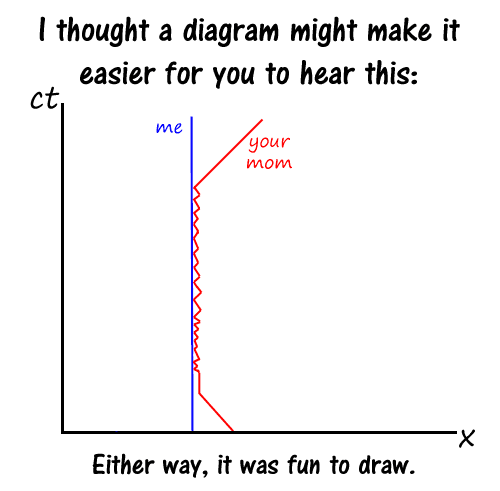

Comic JK 131
When I Feel Like It
⇤
<
?
>
⇥

⇤
<
?
>
⇥
Forum
.
RSS
.
Digg
.
Facebook
.
Reddit
.
Twitter
.
Stumbleupon
There are about 18 thrusts. I guess she's not very picky. ahahahahaahahha Explain please? >If I'm reading the graph correctly it looks like he's trying to tell you that your mother was riding him in reverse cowgirl. Pero mi no comprende... :( Es una diagrama Minkowski que describe lo que yo y tu madre hacieron el noche pasado. HE fucked your mother. X is the position... CT might be time, I'm not sure. It charts his position and that of your mom over time. Note rapid back-and-forth movement. A certain amount of unnecessary detail there. Also, I think he's dead. - Like your mom. Or rather not... This should have been a function, not that <disgust>thing</disgust> >Yeah, kinematics charts like this are usually displacement as a function of time....garbly axes ftl! Also...ct? c=speed of light. velocity times time is displacement...but so is x. Confusion! looks like one o' them relativistic time diagrams It's a space-time diagram. It shows one dimension (x) and how the position changes in time. The "me" line is stationary with respect to the reference frame and "your mom" approaches from the +x, bounces for a while, then leaves. Normally, 45-degree lines represent objects traveling at the speed of light. Lines that are more vertical are moving slower than light and those that are horizontal are moving faster than light (non-physical). Therefore, this implies that the banging was exceeding the speed of light